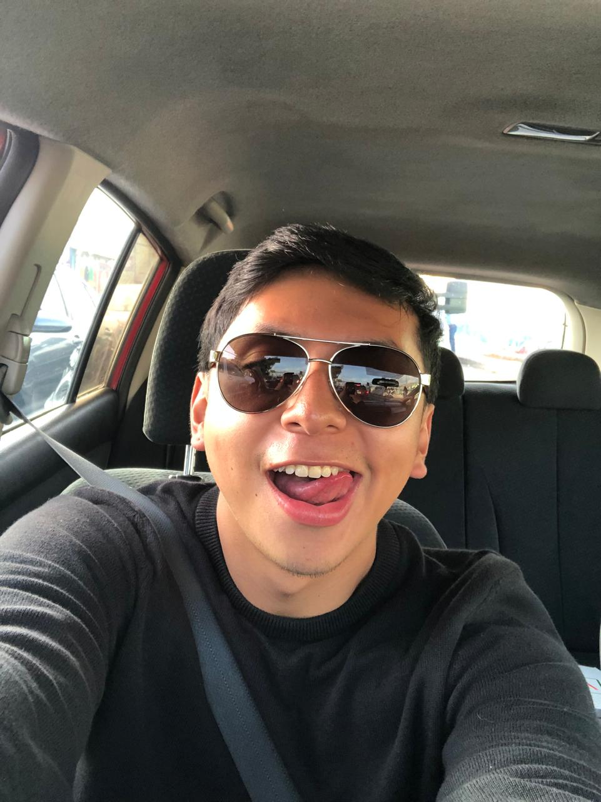
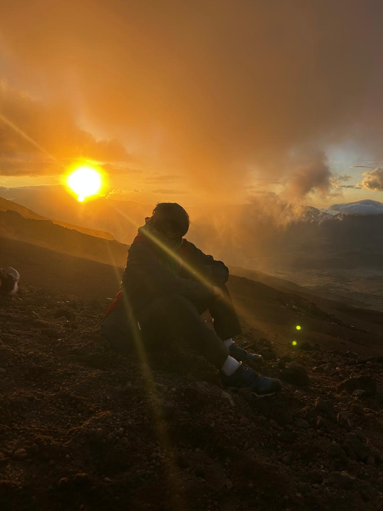
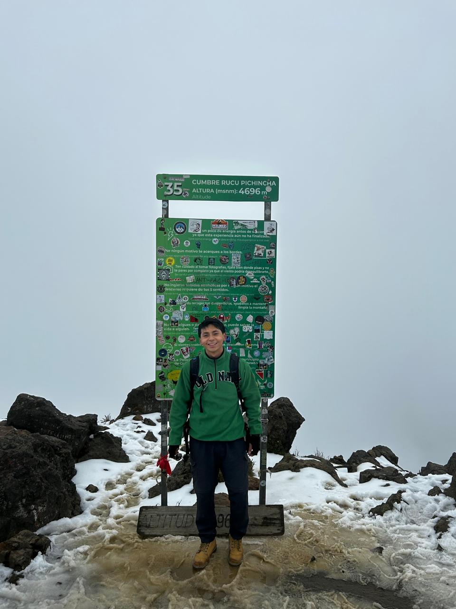
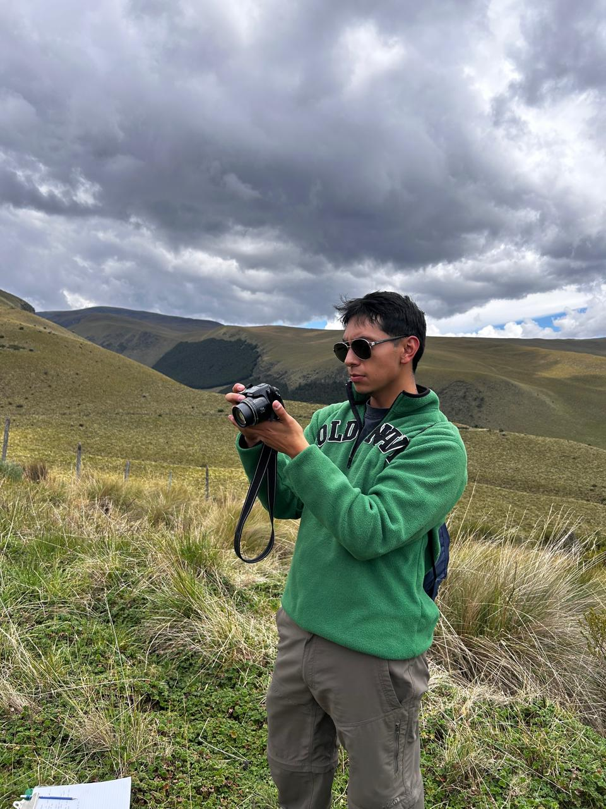
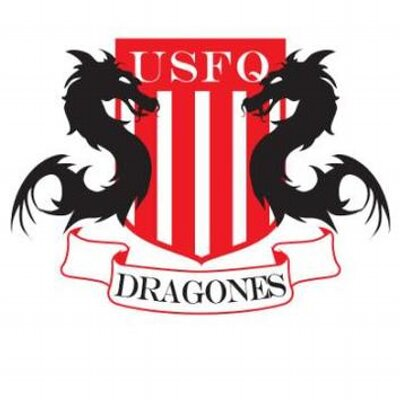
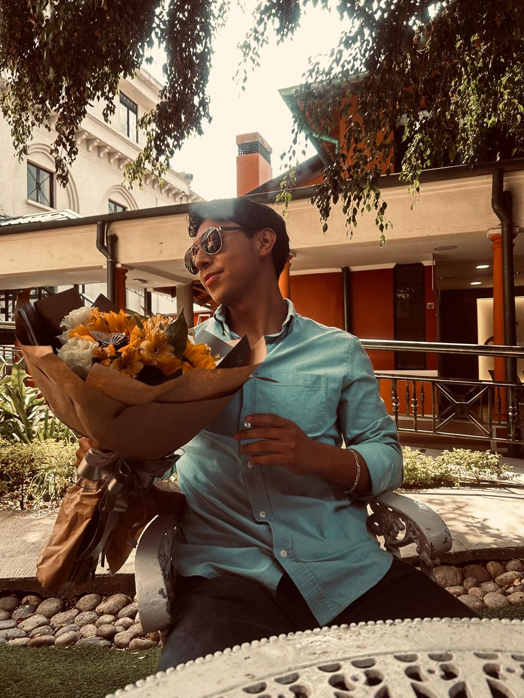

Soy estudiante de Diseño de Medios Interactivos en la Universidad San Francisco de Quito. Me interesa el desarrollo de experiencias digitales, el diseño interactivo y la creación de proyectos visuales.



Uno de mis hobbies favoritos es el hiking. Disfruto explorar la naturaleza, hacer caminatas en montaña y descubrir nuevos paisajes. Estas experiencias también me inspiran creativamente y dan paz a mi ser interior.

También formo parte de la selección de futsal de la universidad. El deporte es una parte importante de mi vida porque me ayuda a desarrollar disciplina, trabajo en equipo y perseverancia.

Me considero una persona amable, empática y amorosa. Siempre trato de ayudar a las personas cuando lo necesitan y creo mucho en el respeto, la empatía y la reciprocidad.